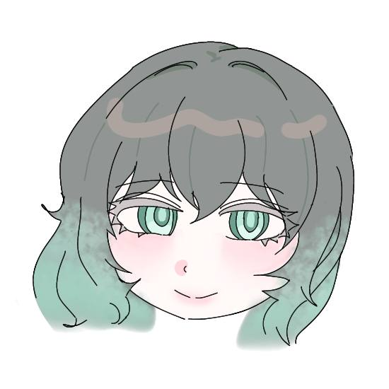

♫ ON
루시드 연구소
@JEOKBUNHARA
루시드를 중심으로 모인 여섯 명의 연구원.
그들이 소속된 [루시드 연구소]는 유명 사기업 부설 연구소로 알려져있지만,
실상은 외부와 철저히 격리된 채 온갖 불법 연구가 진행되는 곳이다.
비대해진 열망과 비가역적 과오, 그로 인해 설령 영원히 돌아올 수 없게 되더라도
처음 만난 순간의 다짐을 잊지 않고 마지막까지 함께하기를 약속한다.
"너를 위한 신념으로 헌신할게 우리는 여전히 그리고 영원히 명예로워."
연구원
루시드
인세인
소나타
사이안
애시드
칸타레
대표 실험체

L-1386
연구소 시설